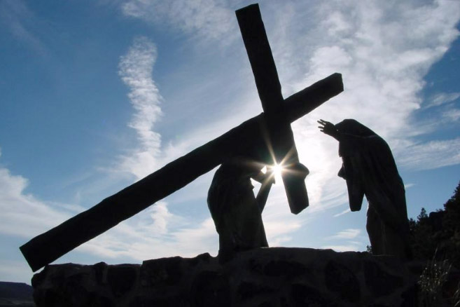

Leitura Orante
Leituras do Dia
Domingo da 22º Domingo do Tempo Comum
(Verde-Ofício dominical comum)
30 de agosto de 2020

Oração do dia
Deus do universo, fonte de todo bem, derramai em nossos corações o vosso amor e estreitai os laços que nos unem convosco para alimentar em nós o que é bom e guardar com solicitude o que nos destes. Por Nosso Senhor Jesus Cristo, Vosso Filho, na unidade do Espírito Santo.
Primeira Leitura: Jeremias, 20,7-9
N7Seduziste-me, Senhor, e deixei-me seduzir; foste mais forte, tiveste mais poder. Tornei-me alvo de irrisão o dia inteiro, todos zombam de mim. 8Todas as vezes que falo, levanto a voz, clamando contra a maldade e invocando calamidades; a palavra do Senhor tornou-se para mim fonte de vergonha e de chacota o dia inteiro. 9Disse comigo: “Não quero mais lembrar-me disso nem falar mais em nome dele”. Senti, então, dentro de mim um fogo ardente a penetrar-me o corpo todo: desfaleci, sem forças para suportar. – Palavra do Senhor
Salmo Responsorial: 62(63)
A minha alma tem sede de vós como a terra sedenta, ó meu Deus!
Sois vós, ó Senhor, o meu Deus! Desde a aurora, ansioso vos busco! A minha alma tem sede de vós, minha carne também vos deseja, como terra sedenta e sem água!
A minha alma tem sede de vós como a terra sedenta, ó meu Deus! !
Venho, assim, contemplar-vos no templo, para ver vossa glória e poder. Vosso amor vale mais do que a vida: e por isso meus lábios vos louvam.
A minha alma tem sede de vós como a terra sedenta, ó meu Deus! !
Quero, pois, vos louvar pela vida e elevar para vós minhas mãos! A minha alma será saciada, como em grande banquete de festa; cantará a alegria em meus lábios ao cantar para vós meu louvor!
A minha alma tem sede de vós como a terra sedenta, ó meu Deus! !
Para mim fostes sempre um socorro; de vossas asas à sombra eu exulto! Minha alma se agarra em vós; com poder vossa mão me sustenta.
A minha alma tem sede de vós como a terra sedenta, ó meu Deus! !
Segunda Leitura: Romanos 12,1-2
1Pela misericórdia de Deus, eu vos exorto, irmãos, a vos oferecerdes em sacrifício vivo, santo e agradável a Deus: este é o vosso culto espiritual. 22Não vos conformeis com o mundo, mas transformai-vos, renovando vossa maneira de pensar e de julgar, para que possais distinguir o que é da vontade de Deus, isto é, o que é bom, o que lhe agrada, o que é perfeito.- Palavra da Salvação.
Evangelho: Mateus 16,21-27
Naquele tempo, 21Jesus começou a mostrar a seus discípulos que devia ir a Jerusalém e sofrer muito da parte dos anciãos, dos sumos sacerdotes e dos mestres da Lei e que devia ser morto e ressuscitar no terceiro dia. 22Então Pedro tomou Jesus à parte e começou a repreendê-lo, dizendo: “Deus não permita tal coisa, Senhor! Que isso nunca te aconteça!” 23Jesus, porém, voltou-se para Pedro e disse: “Vai para longe, satanás! Tu és para mim uma pedra de tropeço, porque não pensas as coisas de Deus, mas sim as coisas dos homens!” 24Então Jesus disse aos discípulos: “Se alguém quer me seguir, renuncie a si mesmo, tome a sua cruz e me siga. 25Pois quem quiser salvar a sua vida vai perdê-la; e quem perder a sua vida por causa de mim vai encontrá-la. 26De fato, que adianta ao homem ganhar o mundo inteiro, mas perder a sua vida? O que poderá alguém dar em troca de sua vida? 27Porque o Filho do Homem virá na glória do seu Pai, com os seus anjos, e então retribuirá a cada um de acordo com a sua conduta”. – Palavra da Salvação.
Leituras do mês
TAGS
missao Amazonia evengel covid-19 indigenas novica papa francisco
Destaques
Província Stella Matutina
Rua São Benedito, 2146 - Santo Amaro - São Paulo - SP |
Tel. (11) 5547-7222


Província Spiritus Divinae Sapientiae
Rua Arnaldo Janssen, 320 - Cara-Cara - Ponta Grossa - PR |
Tel. (42) 3326 4091